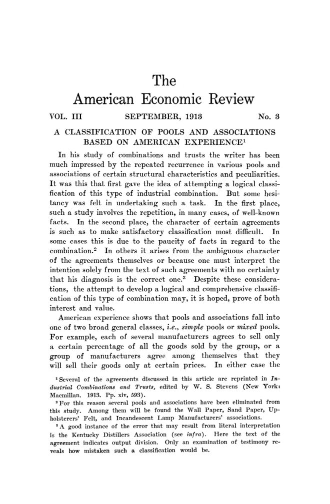

Stevens, 1913: sete tipos de pool e o que os acordos escondiam
Leitura: 8 min
Stevens classifica meio século de pools americanos em sete tipos simples e suas combinações. Ao ler os acordos junto com depoimentos e processos, mostra que o texto muitas vezes descrevia outra coisa.


Em 1887, os destiladores do Kentucky assinaram um acordo que reconhecia expressamente o direito de cada um de fazer quanto uísque quisesse. O documento acrescentava que era vantajoso para todos produzir só a quantidade escrita ao lado de cada nome, e cobrava 20 centavos por galão-prova produzido além dela. Lido sozinho, era um acordo de divisão de produção. Um depoimento a uma comissão do Congresso revelou o número que não aparecia no texto: 100 galões por destilaria, quantidade tão pequena que nenhuma podia sequer começar a operar.
O caso resume o método de William S. Stevens, da Columbia University. Ele estudava combinações e trustes e notou que os mesmos traços estruturais reapareciam em pools de setores e épocas muito diferentes. Daí a tentativa de uma classificação lógica, feita com cautela: para alguns pools faltavam fatos, e para outros só o texto do acordo estava disponível, sem garantia de que o diagnóstico estivesse certo.
Quais são os sete tipos?
Stevens divide os pools em simples e mistos. Um grupo de fabricantes que só divide as vendas em percentuais forma um pool simples; se também fixa preços, forma um misto, duplex. Um terceiro objetivo faz o pool triplex, e assim por diante. Os mistos são apenas combinações de sete tipos simples: divisão de produção ou de tráfego, corte de produção, divisão de território, vendas conjuntas, preço, câmara de compensação e associação do comerciante legítimo.
A divisão de produção é o tipo mais antigo. Os pools da cordoaria, a partir de cerca de 1860, repartiam o mercado nacional em percentuais. Cada fabricante prestava contas mensais a um supervisor; quem vendia acima da cota pagava uma quantia por libra, e quem ficava abaixo recebia a diferença. O pool dos trilhos de aço de 1887 alocou de início 800 mil toneladas segundo percentuais acordados, com 250 mil toneladas adicionais para ajustes.
A divisão de território aparece no caso da United Refining Company, que vendia um derivado de alcatrão de hulha produzido pelas usinas de gás quer houvesse demanda, quer não. Para evitar que o excedente de uma região fosse despejado em outra, cada membro se limitou a seu território e, sem comprador, devia destruir o excedente transformando-o em piche. Em escala internacional, o acordo entre a American Tobacco e a Imperial Tobacco, firmado depois da compra da Ogden's em 1901, dividiu Estados Unidos e Reino Unido e criou a British-American Tobacco para o resto do mundo.
Quando um acordo de vendas é também um acordo de preços?
No pool de vendas conjuntas, os membros vendem por um agente comum. O primeiro foi o do sal de Michigan: em 1868, a Saginaw and Bay Salt Company vendeu no primeiro ano quatro quintos do sal embarcado no vale do Saginaw. Na Michigan Salt Association, de 1876, cada fabricante entregava à associação toda a produção ou arrendava a fábrica. Stevens argumenta que, quando o agente controla a venda, o preço surge do ato de vender, e o pool é simples; quando os membros fixam o preço que o agente deve cobrar, o pool é misto.
O pool de preço é o mais conhecido. Stevens o encontra em forma simples na Gunpowder Trade Association, de 29 de abril de 1872, com sete membros que se reuniam quatro vezes por ano para fixar preços. O mais curioso seria o truste das banheiras, formado em 1909 ou 1910: os fabricantes de louça sanitária esmaltada pagavam a um licenciador, Edwin L. Wayman, US$ 5 por dia por forno pelo uso de uma ferramenta patenteada, embora o trabalho pudesse ser feito à mão. Um comitê fixava os preços aos atacadistas, e o respeito a eles era garantido pela devolução de 80% dos royalties.
A Suprema Corte decidiu que o acordo violava o Sherman Act e que a patente não lhe conferia imunidade. Na câmara de compensação, por fim, cada membro vende a própria produção, e a organização central serve só para repartir os lucros, como no pool de terebintina da Globe Naval Stores Company, de 1905.
O que é uma associação do comerciante legítimo?
É o tipo que Stevens considera mais recente. Com a tendência à eliminação do intermediário, varejistas e atacadistas organizaram-se para manter o comércio no que viam como seus canais legítimos: impedir vendas diretas do fabricante ao consumidor, restringir o fabricante ao atacadista e o atacadista ao varejista, e confinar cada varejista ao seu território.
O instrumento era a classificação. Agências de crédito ligadas às associações publicavam livros que definiam quem era fabricante, atacadista ou varejista. Quando alguém que os varejistas viam como consumidor aparecia como revendedor, exigiam que o nome fosse retirado. Fornecedores que faziam vendas consideradas antiéticas podiam perder os pedidos dos membros, ter o nome publicado em revistas do setor ou circular em listas. Na Tile, Mantel and Grate Association da Califórnia, de 1898, só era revendedor quem tivesse estoque de ao menos US$ 3.000, e não membros pagavam preço de lista cerca de 50% maior.
Como se combinam os tipos?
Os pools mistos ocupam a segunda metade do artigo. Os pools do aço de 1896, 1897 e 1900 dividiam a produção e fixavam preços; o de aço doce de 1896 estabelecia preços mínimos de US$ 20,25 a US$ 22,50 a tonelada e multava em US$ 2 por tonelada o excesso sobre a cota. O pool de tubos de Addyston, de 1894, tinha um leilão: um comitê fixava o preço da encomenda, e a fábrica que oferecesse o maior bônus às demais ficava com o contrato.
A leitura cuidadosa volta a corrigir os textos. A Continental Wall Paper Company parecia um pool de vendas conjuntas, mas, nas palavras do juiz Harlan citadas por Stevens, os fabricantes continuavam a vender por conta própria e a companhia apenas recebia os pagamentos dos atacadistas. A St. Louis Granite Company, organizada para comprar toda a produção de cinco empresas, na prática só registrava vendas, cobrava e fixava preços. Os acordos internacionais aparecem nos pools mistos: o do alumínio, de 1908, reservava 75% das entregas na Europa à empresa europeia e 25% à subsidiária americana, com proporções invertidas no mercado americano.
“o pool está longe de ser uma forma de organização descartada.” (“the pool is far from being a discarded form of organization.”)
A conclusão de Stevens vai contra a opinião corrente. Dado o número de pools de data recente, escreve, quase se poderia crer que a forma era mais usada do que nunca, e algumas avaliações do pool como tipo insatisfatório de combinação deveriam ser revistas.
Na minha leitura
Na minha leitura, a contribuição de Stevens é de método mais que de taxonomia. Ao exigir que a classificação se baseie no que o pool fazia, verificado em depoimentos e processos, e não no que o acordo dizia, ele antecipa o princípio de que a análise de cartéis deve olhar o efeito econômico e não a forma jurídica. O caso do Kentucky, em que uma cota de produção era na verdade uma proibição de produzir, é o exemplo mais claro.
A classificação também mostra por que o pool sobrevivia apesar de instável. Cada tipo responde a um problema diferente de cumprimento: multas por excesso de cota, depósitos de garantia, abatimentos diferidos, compensação centralizada de lucros. A variedade de mecanismos indica que o problema central de um cartel não é combinar o preço, mas garantir que ninguém o descumpra.
Glossário
- Pool
- acordo entre empresas independentes para dividir mercado, produção, território ou lucros, ou para fixar preços.
- Simplex, duplex, triplex
- termos de Stevens para pools com um, dois ou três objetivos combinados.
- Câmara de compensação
- no pool, organização central que reparte os lucros enquanto cada membro vende por conta própria.
- Comerciante legítimo
- associação de varejistas ou atacadistas que tenta impedir vendas fora dos canais tradicionais.
- Abatimento diferido
- devolução de parte de um pagamento condicionada ao cumprimento futuro de um acordo.
- Sherman Act
- lei federal americana de 1890 contra contratos e combinações que restringem o comércio.
Fontes
- A Classification of Pools and Associations Based on American Experience — William S. Stevens (Columbia University) (pp. 545–575). JSTOR · Internet Archive (PDF)
- Edição completa, com os demais artigos: Nº 125 do Arquivo.
Documento em domínio público (EUA, publicado antes de 1931), via JSTOR Early Journal Content e Internet Archive. Resumo e comentário do autor deste site, sem afiliação com a American Economic Association. Encontrou um erro? Escreva: a correção é publicada no próprio texto, com data.
↑ Nº 125 · Setembro de 1913: pools, dólar compensado e a teoria da impaciência Fisher e Seager, 1913: onde entra a produtividade na teoria dos juros? →